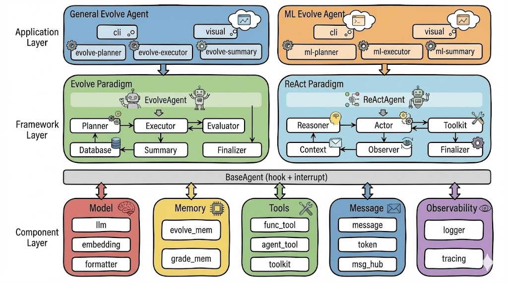

首页
LoongFlow：进化 Agent 开发框架
_从原子组件、开发框架到核心场景 Agent，提供全面的进化 Agent 构建和应用支持_
🚀 General-Evolve通用进化智能体 自动、高效、稳定执行算法设计与优化、数学探索和发现等进化任务。 |
🔥 ML-Evolve机器学习智能体 自主进化机器学习智能体， 自动理解数据、构建评估模型并进化出最优方案。 |
⭐ LoongFlow进化Agent框架 模块化, 高可扩展的智能体开发框架，支持灵活定制和无缝集成。 |
LoongFlow（龙场）：取意“龙场悟道”，将 模型之“知” 与 工具之“行” 深度熔炼，以知促行，由行成悟，开启 Agent 认知自主时代。不再是机械执行的工具，而是在 PES（规划-执行-总结）的循环磨砺中打破认知天花板，实现从“被动工具”向“自主智能”的进化飞跃。
📰 News
- [2025-12] 🎉 LoongFlow v1 has been released now!
✨ Why LoongFlow?
高效、稳定、可扩展的进化 Agent 开发框架，创新PES进化范式，助力开发者快速构建高质量进化 Agent。

-
高效：创新PES进化范式，结合多结构融合进化记忆，从“随机突变”转向“定向认知演化”。显著缓解传统进化方法中生成质量低、无效评估多、重复试错与随机性过高等问题，大幅提升进化效率与收敛确定性。相比传统方法，综合进化效率提升约 60%。
-
稳定：贯彻“工程确定性”的理念，通过系统性工程架构封装模型固有不确定性，降低模型推理负担，构建起高稳定性、可复现的智能进化系统。在实际评估中，LoongFlow 展现了显著的性能优势。
-
易用：LoongFlow 提供从典型场景进化 Agent、高可扩展进化 Agent 开发框架，到模块化原子组件的全栈支持。从应用到框架，助力开发者快速应用进化 Agent 解决领域问题，显著降低开发调优成本。
💬 Contact
欢迎加入我们的社区进行讨论：
| Discord | |
|---|---|
🚀 快速开始
安装
LoongFlow requires Python 3.12 or higher.
# Install uv/conda and clone repository
uv: https://docs.astral.sh/uv/getting-started/installation/
Miniforge: https://conda-forge.org/download/
# Install with uv
cd LoongFlow
uv venv .venv --python 3.12
source .venv/bin/activate
uv pip install -e .
# Install with conda
cd LoongFlow
conda create -n loongflow python=3.12
conda activate loongflow
pip install -e .
运行示例
Run General Evolve Agent
# Config LLM: Edit task_config.yaml, recommend to use gemini-3-pro-preview or deepseek-r1-250528
# Example: ./agents/general_evolve/examples/packing_circle_in_unit_square/task_config.yaml
# The model needs to configure providers as needed, default provider is openai. for example: openai/gemini-3-pro-preview
llm_config:
url: "https://xxxxxx/v1"
api_key: "******"
model: "openai/gemini-3-pro-preview"
# Run your first evolve task, the evolution results are in the ./output directory
uv pip install -r ./agents/general_evolve/examples/packing_circle_in_unit_square/requirements.txt
./run_task.sh packing_circle_in_unit_square --background
# Check task log
tail -f ./agents/general_evolve/examples/packing_circle_in_unit_square/run.log
# Stop task
./run_task.sh stop packing_circle_in_unit_square
Run ML Evolve Agent
# Config LLM: Edit task_config.yaml, recommend to use gemini-3-pro-preview or deepseek-r1-250528
# Example: ./agents/ml_evolve/examples/ml_example/task_config.yaml
# The model needs to configure providers as needed, default provider is openai. for example: openai/gemini-3-pro-preview
llm_config:
url: "https://xxxxxx/v1"
api_key: "******"
model: "openai/gemini-3-pro-preview"
# Init ml evolve
./run_ml.sh init
# Run your first evolve task, the evolution results are in the ./output directory
# ./run_ml.sh run <task_name> [--background] [other Python args]
./run_ml.sh run ml_example --background
# Check task log
tail -f ./agents/ml_evolve/examples/ml_example/agent.log
# Stop task
./run_ml.sh stop ml_example
🌟 LoongFlow 取得的成果
开放性数学问题
| Problem | Previously best known | AlphaEvolve | LoongFlow Evolve Result | Details |
|---|---|---|---|---|
| Circle packing in a square | 2.634 (Higher is Better) | 2.6358627564136983 | 2.6359829624734026 | packing_circle_in_unit_square |
| Circle packing in a rectangle | 2.364 (Higher is Better) | 2.3658321334167627 | 2.365832229500823 | packing_circle_in_rectangle |
| Packing hexagons in hexagons | 3.943 (Lower is Better) | 3.930092 | 3.928906855463712 | packing_hexagons_in_hexagons |
| Max to min ratios | 12.89（Lower is Better） | 12.88926611203463 | 12.889243547212832 | max_to_min_ratios |
| Minimum Overlap Problem | 0.380927 (Lower is Better) | 0.380924 | 0.3809137564083654 | minimum_overlap_problem |
| An uncertainty inequality | 0.3523 (Lower is Better) | 0.35209910442252773 | 0.352099104421844 | uncertainty_inequality |
| Second autocorrelation inequality | 0.88922 (Higher is Better) | 0.8962799441554083 | 0.9027021077220739 | second_autocorrelation_inequality |
| First autocorrelation inequality | 1.5098 (Lower is Better) | 1.5052939684401607 | 1.509527314861778 | first_autocorrelation_inequality |
| Sums differences problems | 1.059793 (Higher is Better) | 1.1219357374860444 | 1.103534711409646 | sums_and_differences_problems_1 |
| heilbronn triangles | 0.036（Higher is Better） | 0.036529889880030156 | 0.0365298898793351 | heilbronn_problem_for_triangles |
| heilbronn convex regions | 0.0306（Higher is Better） | 0.030936889034895654 | 0.030900663674639613 | heilbronn_problem_for_convex_regions |
在陶哲轩&AplphaEvolve 团队提出开放性数学题上验证，11 个题目上超过之前已知最好结果。
机器学习任务
| Problem | LoongFlow Evolve Result | Details |
|---|---|---|
| aerial-cactus-identification | 🥇 Gold | aerial-cactus-identification |
| denoising-dirty-documents | 🥇 Gold | denoising-dirty-documents |
| detecting-insults-in-social-commentary | 🥇 Gold | detecting-insults-in-social-commentary |
| dogs-vs-cats-redux-kernels-edition | 🥇 Gold | dogs-vs-cats-redux-kernels-edition |
| histopathologic-cancer-detection | 🥇 Gold | histopathologic-cancer-detection |
| nomad2018-predict-transparent-conductors | 🥇 Gold | nomad2018-predict-transparent-conductors |
| plant-pathology-2020-fgvc7 | 🥇 Gold | plant-pathology-2020-fgvc7 |
| tabular-playground-series-dec-2021 | 🥇 Gold | tabular-playground-series-dec-2021 |
| the-icml-2013-whale-challenge-right-whale-redux | 🥇 Gold | the-icml-2013-whale-challenge-right-whale-redux |
| google-quest-challenge | 🥇 Gold | google-quest-challenge |
| plant-pathology-2021-fgvc8 | 🥇 Gold | plant-pathology-2021-fgvc8 |
| us-patent-phrase-to-phrase-matching | 🥇 Gold | us-patent-phrase-to-phrase-matching |
| predict-volcanic-eruptions-ingv-oe | 🥇 Gold | predict-volcanic-eruptions-ingv-oe |
| stanford-covid-vaccine | 🥇 Gold | stanford-covid-vaccine |
在 openai mle-bench 评测集中20场kaggle机器学习赛事验证，取得14个金牌，完整结果将在完成全部赛事后公布。
其他尝试
另外在数学谜题，MOE负载均衡等问题上验证，具体可在Examples查看。
🧩 高级使用
EvolveAgent
from evolux.evolve import EvolveAgent
# Config evolve agent
agent = EvolveAgent(
config=config,
checkpoint_path=checkpoint_path,
)
# Register worker（Implement the Planner, Executor, and Summary interfaces）
agent.register_planner_worker("planner", PlanAgent)
agent.register_executor_worker("executor", ExecuteAgent)
agent.register_summary_worker("summary", SummaryAgent)
# Run agent
result = await agent()
For more details, please refer to EvolveAgent
ReActAgent
from evolux.react import AgentContext, ReActAgent
from agentsdk.tools import TodoReadTool, TodoWriteTool, Toolkit
# Build agent context
toolkit = Toolkit()
toolkit.register_tool(TodoReadTool())
toolkit.register_tool(TodoWriteTool())
# Build default react agent
agent = ReActAgent.create_default(model=model, sys_prompt=sys_prompt, toolkit=toolkit)
# Run agent
result = await agent(message)
For more details, please refer to ReActAgent
🤝 贡献与讨论
Please read CONTRIBUTING.md for details on our code of conduct, and the process for submitting pull requests to us.
📜 License
LoongFlow is licensed under the Apache License 2.0.
📚 引用
如果您觉得我们的工作对您有帮助，请考虑引用我们的论文：
@misc{LoongFlow2025,
title={LoongFlow: Directed Evolutionary Search via a Cognitive Plan-Execute-Summarize Paradigm},
author={Chunhui Wan and Xunan Dai and Zhuo Wang and Minglei Li and Yanpeng Wang and Yinan Mao and Yu Lan and Zhiwen Xiao},
year={2025},
eprint={2512.24077},
archivePrefix={arXiv},
primaryClass={cs.AI},
url={https://arxiv.org/abs/2512.24077},
}